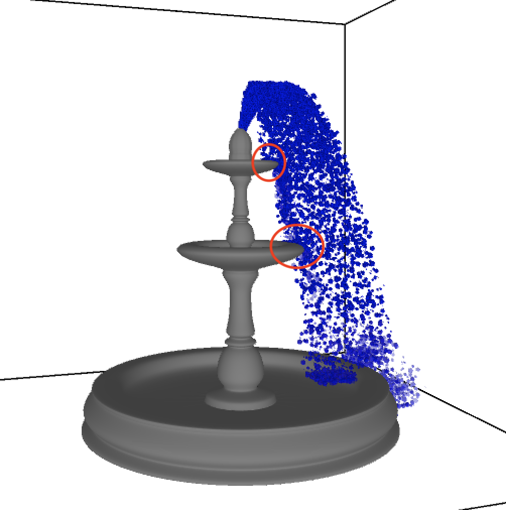
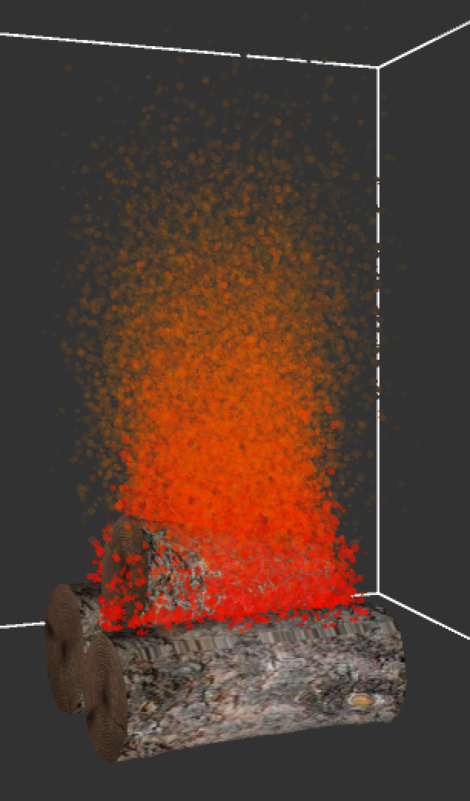
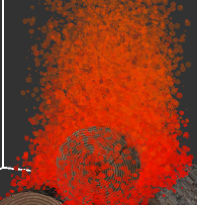

CSCI 5611 Particle System Project Webpage
Ansel Smolund
Smolu006
For my first particle system, I decided to simulate an arc of water
pouring out of the top of a fountain. I downloaded a 3d asset of the fountain
online and used a particle system with water textured particles to simulate the water.
Each particle was given a negative initial y velocity within a random range, and a
positive initial x velocity within a random range. There was also a small z velocity given
to each particle to simulate the idea of randomness and potential wind hitting the fountain.
One problem that I ran into while creating this particle system was the use of the Sphere() function
with many particles being added to the ArrayList. The issue was that Sphere() uses many triangles
to create one sphere. This is far too many calculations to run with thousands of particles within the system.
To account for this computational limitation, I created a primitive 3d shape, with far fewer triangles than the
Sphere() function would call.
The video to the right shows the simulation in action. It shows the 3d navigatable, user-controlled camera of the scene. At 1:20, the
video zooms in to show the particles from close up. Below are a few screenshots from the simulation, highlighting some of the key features.
Number in top right indicates how many particles are present
One of the more difficult aspects of this simulation was creating a collision detection mechanism with the 3d fountain. In the simulation, you can see that at each level of the fountain, the water particles pool in the bowl and eventually pour out in a realistic fashion. Once the particles hit the floor of the simulation they bounce up in a splashing animation. The photo below diagrams at which points in the model the water particles detect collisions, and react accordingly.
For my second particle system, I decided to simulate the flames of a fire. I loaded in a 3d model of wood logs to give the effect of a campfire. Each particle is a textured quad, just like in my water fountain simulation. As the particle slowly dies out, it changes color from a bright red into a yellowish-orange and then finally into a dark grey to simulate the smoke coming out from the top of the fire. I used the same camera enviornment as I did in the first simulation, to pan around the scene and zoom in and out. I did not use a library for the camera, rather I just scaled and rotated the scene as user input desired. Up arrow will rotate the X axis backward, left arrow will rotate the Y axis to the left, z key will zoom in on the scene, and so on. To give a more realistic feel of fire, I implemented a strategic initial velocity for each particle depending on their initial location. If the initial x position is to the right of center then it will have a higher probability of a negative initial x velocity, and if the initial x position is to the left of center it will have a higher probability of a positive initial x velocity. This is implemented to simulate an inward plume that occurs at the top of a real fire. The logs have added context for the simulation to make it more realistic.
 